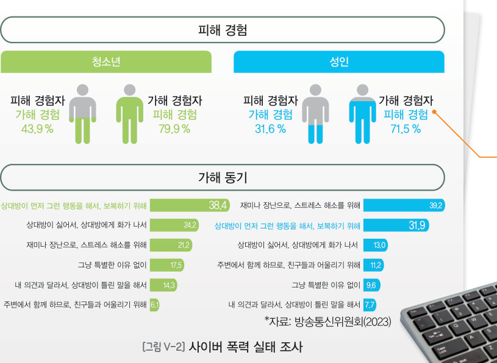

SNS에 올린 글 하나는 10분 만에 몇 명에게 퍼질까? 교과서 네트워크 그림을 시뮬레이터로 재생해 확산 속도를 체험하고, 공공 데이터 658 명의 응답을 코답처럼 그래프로 그려 사이버 폭력의 가해자가 주로 누구인지 분석해 보자.
오른쪽 그림은 사회 관계망 서비스(SNS)에서 홍길동이라는 사람의 계정과 연결되어 있는 사용자 네트워크의 예시를 나타낸 것이다. 홍길동이 사진이나 글을 올리면 친구 관계인 모든 사용자가 볼 수 있다. 검은 사람 한 명은 1차 확산 100 명, 보라 사람 한 명은 2차 확산 100 명을 나타내고, 선 위의 ‘분’은 연결된 모든 사람이 보는 데 걸린 시간이다.
공공데이터포털(data.go.kr)에서 ‘사이버 폭력 실태조사’를 검색하면 ‘한국지능정보사회진흥원_사이버폭력 실태조사’를 내려받을 수 있다. 여기서는 ‘인터넷/스마트폰을 이용하여 나를 괴롭힌 사람은 주로 누구였습니까?’ 문항을 가공한 교과서 실습 데이터(658 명)를 코답(CODAP)처럼 분석해 보자. Known: 아는 사람, Unknown: 모르는 사람
| 평가 기준 | 스스로 평가 |
|---|---|
| 디지털 공간에서 정보가 확산되는 속도와 범위를 설명할 수 있는가? | |
| 공공 데이터를 분석하여 사이버 폭력의 실태를 해석할 수 있는가? |